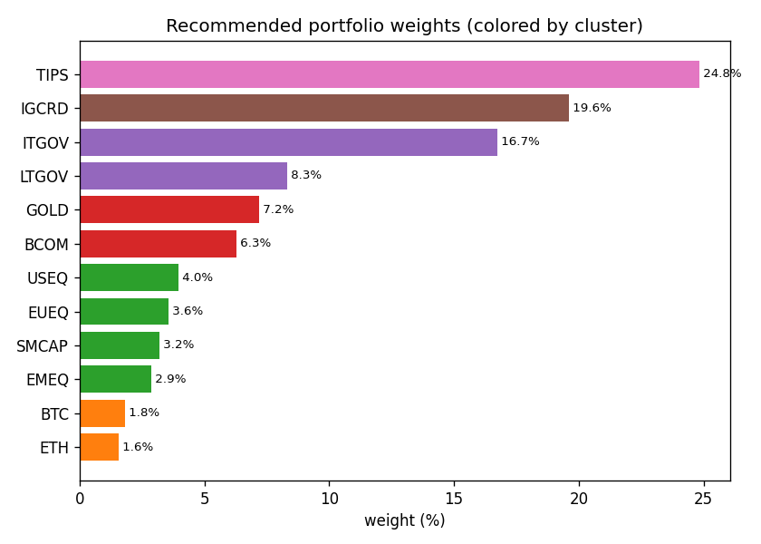
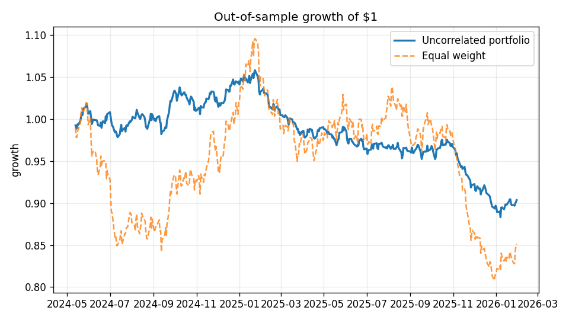
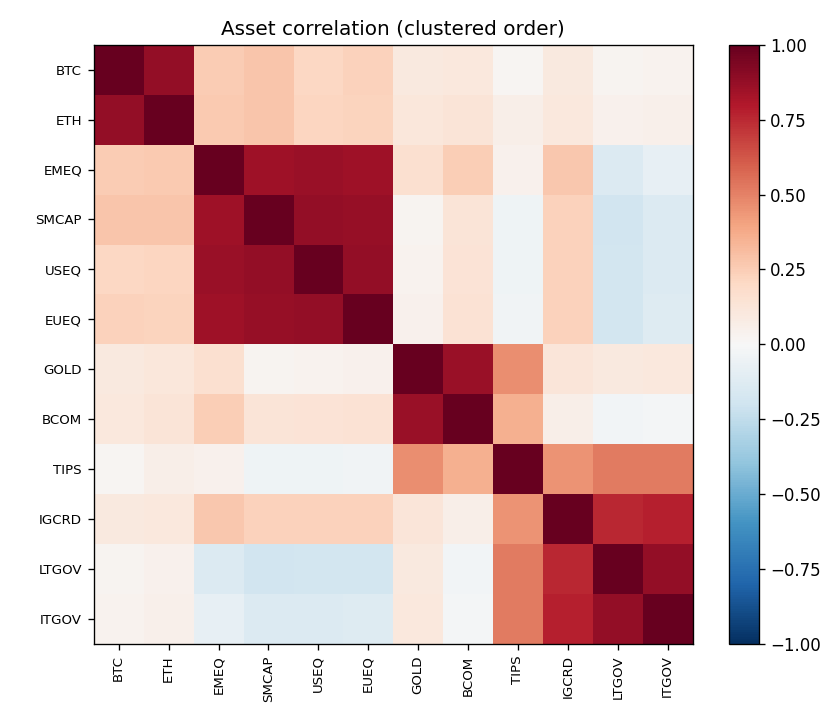

Combining several independent return streams beats picking any single one. This builds the portfolio: cluster a multi-asset universe by correlation, then balance risk across the clusters.
Inverse-vol within each cluster, risk parity across clusters — so a calm bond sleeve and a wild crypto sleeve each contribute the same risk.



Correlation → distance √(½(1−ρ)) → hierarchical clustering, k chosen by silhouette.
Inverse-volatility weights inside each cluster.
Risk parity over the cluster streams (SLSQP), equalizing risk contributions.
Train/test split; report vol, drawdown, Sharpe, diversification ratio.
pip install -e ".[dev]"
uncorrelated --plots docs # clusters, weights, performance + charts
uncorrelated --source live # use real market data (yfinance)